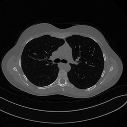

A Brief PyTorch Viewpoint#
Computational Representation and Differentiation#
Note
In these notes, PyTorch [12] is not presented as a software tutorial for its own sake. It is introduced as a concrete language for implementing parameterized maps, computational graphs, and gradient-based optimization in imaging.
Even in a mathematically oriented course, it is helpful to include one short chapter that translates abstract objects into the language of an implementation framework. Otherwise students may understand the equations and still fail to recognize them when they appear in code.
The goal here is not to teach PyTorch as a software package in full generality. The goal is to explain how the mathematical ingredients already introduced in the course are represented computationally.
Tensors as discrete objects.
In PyTorch, the basic object is the tensor. From a mathematical viewpoint, a tensor is simply a multidimensional array, but in practice it carries additional information:
shape, which tells us the dimensions;
data type, which determines numerical precision;
device, which tells us whether the tensor lives on CPU or GPU;
gradient tracking, which tells us whether derivatives with respect to that tensor must be recorded.
A grayscale image of size \(H \times W\) is represented as a tensor of shape \((H, W)\), but in a training pipeline it is almost always embedded in the standard format
where \(B\) is the batch size and \(C\) is the number of channels. For a single grayscale image we have \(B=1\), \(C=1\); for a batch of \(B\) RGB images, \(C=3\). In inverse problems, \(C\) can carry physical meaning: different MRI receiver coils, independent spectral bands in multispectral imaging, or the real and imaginary parts of a complex-valued field. Understanding this convention is not a PyTorch technicality — it is part of understanding how the data entering the network relate to the underlying physics.
Shape errors are among the most common mistakes when moving from equations to code. An operator that expects input of shape \((B,1,H,W)\) and receives \((B,H,W)\) will either fail silently or broadcast in an unintended way. Getting shapes right is the first step in getting the mathematics right.
# Local course asset example: load and normalize one Mayo-style image.
from pathlib import Path
def course_asset_path(name):
here = Path.cwd().resolve()
for base in (here, here.parent, here.parent.parent):
candidate = base / 'imgs' / name
if candidate.exists():
return candidate
raise FileNotFoundError(f'Could not locate imgs/{name} from {here}')
import numpy as np
import torch
from PIL import Image
img = Image.open(course_asset_path('Mayo.png')).convert('L').resize((256, 256))
array = np.array(img, dtype=np.float32)
tensor = torch.tensor(array).unsqueeze(0).unsqueeze(0) / 255.0
print('Notebook-ready tensor shape:', tensor.shape)
print('dtype:', tensor.dtype)
print('intensity range:', float(tensor.min()), float(tensor.max()))
Notebook-ready tensor shape: torch.Size([1, 1, 256, 256])
dtype: torch.float32
intensity range: 0.0 0.8627451062202454
# Local course asset example: load and normalize one Mayo-style image.
from pathlib import Path
def course_asset_path(name):
here = Path.cwd().resolve()
for base in (here, here.parent, here.parent.parent):
candidate = base / 'imgs' / name
if candidate.exists():
return candidate
raise FileNotFoundError(f'Could not locate imgs/{name} from {here}')
from PIL import Image
from IPython.display import display
import numpy as np
import torch
img = Image.open(course_asset_path('Mayo.png')).convert('L').resize((256, 256))
array = np.array(img, dtype=np.float32)
tensor = torch.tensor(array).unsqueeze(0).unsqueeze(0) / 255.0
print('Notebook-ready tensor shape:', tensor.shape)
print('dtype:', tensor.dtype)
print('intensity range:', float(tensor.min()), float(tensor.max()))
display(img)
Notebook-ready tensor shape: torch.Size([1, 1, 256, 256])
dtype: torch.float32
intensity range: 0.0 0.8627451062202454

import torch
image = torch.arange(16, dtype=torch.float32).reshape(1, 1, 4, 4)
batch = image.repeat(3, 1, 1, 1)
print('Single image shape:', image.shape)
print('Mini-batch shape:', batch.shape)
print('First image in the batch:')
print(batch[0, 0])
Single image shape: torch.Size([1, 1, 4, 4])
Mini-batch shape: torch.Size([3, 1, 4, 4])
First image in the batch:
tensor([[ 0., 1., 2., 3.],
[ 4., 5., 6., 7.],
[ 8., 9., 10., 11.],
[12., 13., 14., 15.]])
Parameters and modules.
A neural network is built by composing modules. Each module corresponds to a parameterized map. For example:
Linearimplements \(\boldsymbol{z} \mapsto W\boldsymbol{z}+\boldsymbol{b}\);Conv2dimplements a discrete convolution with learnable kernels;activation functions implement pointwise nonlinear maps;
normalization layers modify the statistics of intermediate features.
This correspondence between modules and mathematical operators should be taken literally. A Conv2d(1, 32, kernel_size=3) layer is not just “a convolution” in a generic sense. It defines 32 learned filters of size \(3\times3\), each a miniature discrete operator that detects a specific local pattern in the input. Stacking these layers builds a hierarchy of learned operators, from simple edge detectors to complex, task-specific feature extractors.
This viewpoint extends to physics-based operators. In this course the IPPy library wraps operators such as the CT projector or the image gradient as PyTorch modules, so that they can be composed with learned layers inside the same computational graph. A reconstruction network that starts with a physics-based backprojection step, followed by several learned convolutional layers, is simply a composition of modules — some with fixed, physics-derived weights, others with learned weights. Gradients flow through both without distinction.
Computational graphs and automatic differentiation.
Suppose a scalar loss \(L(\boldsymbol{\Theta})\) is produced by a sequence of tensor operations. PyTorch records the computational graph — a directed acyclic graph whose nodes are operations and whose edges carry the intermediate tensors — and can compute
through automatic differentiation by traversing this graph in reverse.
From a mathematical point of view, this is simply the chain rule applied systematically. The importance of PyTorch is that it automates this process efficiently even when the network contains millions of parameters, and even when the computational graph mixes learned layers with arbitrary tensor operations.
For physics-based operators whose backward pass is not automatically derived — such as a CT projector implemented via a dedicated numerical library — PyTorch provides a mechanism to register a custom backward function. This is how IPPy implements the adjoint of the projector: the forward pass calls the projection code, and the registered backward pass calls its adjoint. From the rest of the computational graph, this operator is indistinguishable from a standard learned layer.
import torch
w = torch.tensor([2.0], requires_grad=True)
x = torch.tensor([3.0])
target = torch.tensor([1.0])
prediction = w * x
loss = torch.mean((prediction - target) ** 2)
loss.backward()
print('Prediction:', prediction.item())
print('Loss:', loss.item())
print('d loss / d w:', w.grad.item())
Prediction: 6.0
Loss: 25.0
d loss / d w: 30.0
Training Mechanics in Practice#
Training is usually performed on minibatches rather than on the whole dataset. If the empirical risk is
then at one iteration we replace it by the batch approximation
The minibatch gradient \(\nabla \widehat{\mathcal{R}}_B(\boldsymbol{\Theta})\) is an unbiased estimator of the full-dataset gradient: its expectation over random batch draws equals \(\nabla \widehat{\mathcal{R}}_N(\boldsymbol{\Theta})\). This statistical fact justifies using small batches without introducing systematic bias in the optimization direction.
In medical and scientific imaging, batch sizes tend to be small — typically 4 to 16 — because individual images are large and GPU memory is finite. The noise introduced by random batch sampling is not purely a nuisance: it acts as an implicit regularizer, helping the optimizer avoid sharp minima that tend to generalize poorly. Minibatch training is therefore not just a memory-saving device. It is a stochastic optimization procedure with statistical consequences for both convergence speed and the quality of the solution found.
import torch
batch = torch.arange(2 * 1 * 5 * 5, dtype=torch.float32).reshape(2, 1, 5, 5)
conv = torch.nn.Conv2d(in_channels=1, out_channels=4, kernel_size=3, padding=1)
output = conv(batch)
print('Input batch shape:', batch.shape)
print('Output batch shape after Conv2d:', output.shape)
print('Each image is processed independently, but in parallel along the batch dimension.')
Input batch shape: torch.Size([2, 1, 5, 5])
Output batch shape after Conv2d: torch.Size([2, 4, 5, 5])
Each image is processed independently, but in parallel along the batch dimension.
Losses and optimizers.
In code, a loss is a scalar tensor. Once it is computed, one calls .backward() to obtain all required parameter gradients. Then an optimizer updates the parameters.
For vanilla SGD, the mathematical update is
Adam [9] modifies this rule by rescaling and averaging gradients. It is useful for students to see that optimizer choice belongs to numerical optimization, not to model design.
import torch
model = torch.nn.Linear(2, 1)
optimizer = torch.optim.SGD(model.parameters(), lr=0.1)
x = torch.tensor([[1.0, -1.0], [0.5, 0.5]])
y = torch.tensor([[2.0], [0.0]])
before = model.weight.detach().clone()
prediction = model(x)
loss = torch.mean((prediction - y) ** 2)
optimizer.zero_grad()
loss.backward()
optimizer.step()
after = model.weight.detach().clone()
print('Loss before the update:', loss.item())
print('Weights before the update:')
print(before)
print('Weights after one SGD step:')
print(after)
Loss before the update: 0.6780983805656433
Weights before the update:
tensor([[ 0.3531, -0.2424]])
Weights after one SGD step:
tensor([[ 0.4468, -0.3709]])
Why This Computational Viewpoint Matters for Imaging#
In computational imaging, implementation details can affect the mathematical model more than one might expect. Four examples are especially relevant.
Padding conventions change the effective discrete convolution. A network using zero-padding treats the image boundary as if it were surrounded by zeros, which introduces an artificial edge at every border. Circular padding assumes periodicity, and reflective padding assumes a mirror symmetry. In tomographic reconstruction, where the image boundary has direct physical meaning, the choice of padding implicitly encodes a hypothesis about the object outside the field of view.
Finite precision affects numerical stability. Standard single-precision float32 arithmetic can accumulate rounding errors across many layers. In ill-conditioned inverse problems — where small perturbations in the input can amplify enormously — this is not negligible, and the difference between float32 and float64 may be visible in the reconstructed image.
Normalization changes the scale and statistical properties of intermediate representations. Batch normalization normalizes using statistics computed across the current minibatch, which couples items that are processed together and introduces a dependency on batch composition. Layer normalization operates on each sample independently, making it better suited to settings where batch size is very small — which is common in imaging.
Data augmentation modifies the empirical distribution seen during training. A network trained on images that have been randomly flipped horizontally will implicitly learn a reconstruction rule that is invariant to left-right reflection. Whether this symmetry is physically appropriate depends entirely on the imaging geometry. Augmentation is not just a regularization trick; it is an implicit encoding of prior knowledge about the problem.
The computational realization of a model is therefore never neutral. Understanding PyTorch’s conventions is the most reliable way to ensure that what is implemented corresponds to what is intended mathematically.
Exercises#
Create a tensor of shape ((4,1,32,32)) and explain what each dimension means in an imaging pipeline.
Write a minimal
Linearmodel and verify by hand one gradient that PyTorch computes automatically.Explain why minibatch optimization changes the numerical optimization problem even when the mathematical loss is unchanged.
Give one example where a low-level implementation choice, such as padding or dtype, changes the actual model being trained.
Further Reading#
This chapter is intentionally brief. Its role is to make the later notebooks readable at the code level. For a thorough and practical introduction to deep learning with PyTorch, see [15]. The framework itself, including its design principles and performance characteristics, is described in [12]. When studying independently, focus less on memorizing PyTorch syntax and more on recognizing how tensors, modules, losses, and optimizers correspond to the mathematical objects introduced in the course.